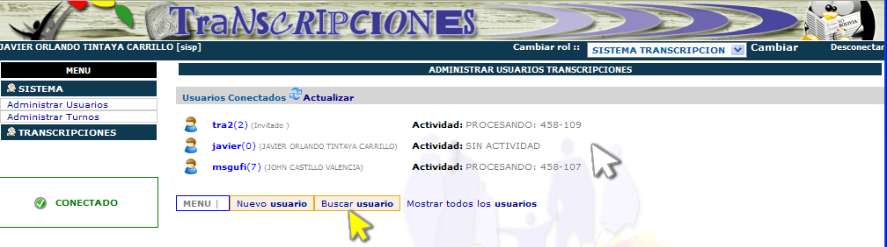

Sistema de Transcripciones
Programa Cédula Gratuita para todos los Bolivianos
MINISTERIO DE GOBIERNO
PROGRAMA CEDULA GRATUITA PARA TODOS LOS BOLIVIANOS
Manual de Usuario
USUARIO: Administrador
SISTEMA DE TRANSCRIPCION
Introducción
Administración de Usuarios
Creación de cuentas de usuario
Administración de Turnos
Administración y supervisión de transcripciones
Administración de cuentas de transcriptor
El presente documento contiene el procedimiento adecuado que deberá seguir el usuario Administrador para un correcto y ágil funcionamiento del Sistema de Transcripción del PROGRAMA CEDULA GRATUITA PARA TODOS LOS BOLIVIANOS.
El Manual de Usuario Administrador provee además las imágenes de la aplicación, facilitando así, un rápido aprendizaje y entendimiento sobre el funcionamiento del sistema.
El sistema es una aplicación Web. Para su funcionamiento usted requiere tener instalado Mozilla Firefox versión 2.0 o superior en el ordenador.
Cabe resaltar que el sistema no es compatible con otros navegadores Web como Internet Explorer.
Antes de iniciar cualquier acción en la aplicación, el usuario administrador deberá de estar registrado previamente.
Inicialmente aparecerá en el lado izquierdo de la pantalla el campo para el ingreso al sistema, tal como se muestra en la Fig.1.
Fig. 1
Escribiendo su número de cuenta y la contraseña (o password) en el área enmarcada con margen verde correspondiente de Acceso a transcripciones, que se muestra en la imagen anterior (Fig.1)
Para ingresar con el número de cuenta, ingréselo en el espacio correspondiente, como se muestra en la imagen.
En seguida, ingrese su contraseña o password.
Después de ingresar su número de cuenta y la contraseña, se debe hacer click en el botón Entrar, mostrado en la siguiente imagen.
En caso de haber introducido incorrectamente los datos o cuando su cuenta en el sistema haya caducado, se desplegará el siguiente mensaje de error:
Si se ha ingresado la información correcta, entrará al área que corresponde con su perfil, ya que el sistema identifica el número de cuenta con un usuario específico, en este caso el de administrador del sistema. Por ejemplo, los usuarios de transcripciones, que no pertenecen al personal de Administración del sistema, entrarán a transcripciones para comenzar a hacer las respectivas transcripciones de tarjetas.
Se tiene la facilidad para el ingreso al sistema, esto consiste en que el sistema reconoce las letras mayúsculas y minúsculas indistintamente como se ve en la figura 2.
Fig. 2
En la Fig. 2 se evidencia que el sistema reconoce las letras entre mayúsculas y minúsculas indistintamente.
Inicialmente, el menú para trabajar es el siguiente.
Fig. 3
El Usuario Administrador, tiene las opciones de administrar usuarios y tarjetas, las cuales se pueden seleccionar directamente en el menú, como se muestra en la figura 4.
Fig. 4
Administración de Usuarios
Una vez ingresando al Menú y seleccionando la opción Administrar Usuarios, inicialmente desplegara la siguiente interfaz como se ve en la figura 6:

Fig. 5
En la figura 5, el lugar señalado por el puntero o flecha de color blanco muestra a todos los usuarios que están conectados al sistema y la actividad que están realizando. A continuación, en la misma figura, el menú que esta señalado con la flecha o puntero de color amarillo muestra las opciones Nuevo Usuario y Buscar Usuario, los mismos que detallaremos a continuación.
Con esta opción, el administrador del sistema registra usuarios en el sistema
Fig. 6
Al presionar el botón Nuevo usuario, que se encuentra en el menú señalado por la flecha blanca en la figura 6, se despliega el formulario de adición de nuevo usuario en los cuales se debe introducir los datos referentes a la Cédula de Identidad, Nombres y Apellidos además de su Email y Teléfonos, esto en la columna para los datos personales.
Ahora en la columna de la Información de la cuenta que es la que esta señalada por la flecha de color amarillo en la figura 6 se adiciona la información referente al nombre de usuario en el sistema, la asignación de clave y asignación de turnos de transcripción, a continuación se debe seleccionar en tipo que usuario que se esta adicionando, si es un Civil o Policía.
Para terminar el proceso de adición de usuarios se debe presionar el botón Registrar que se muestra en la figura 6.
Supongamos que se desea adicionar al usuario transcriptor Ricardo Velásquez Valdez con el CI: 3884732 en el turno de la mañana, esta persona no es un policía así que lo anotamos como civil, por tanto, el proceso de introducir los datos en el formulario de adición de nuevo usuario será el similar a la figura 7.
Fig. 7
Para finalizar el registro solo se debe presionar el botón Registrar, si no hubo ningún problema, se desplegará un mensaje:
Caso contrario el mensaje será el siguiente:

Para modificar la información del usuario inicialmente se debe listar a todos los usuarios, y hacer click en el ID del usuario como se muestra en la figura 8.
Fig. 8
Seguidamente, aparecerá el formulario descrito en la figura 7 para modificar la información deseada y para finalizar la operación solo debe presionar el botón Registrar como se ve en la figura 7.